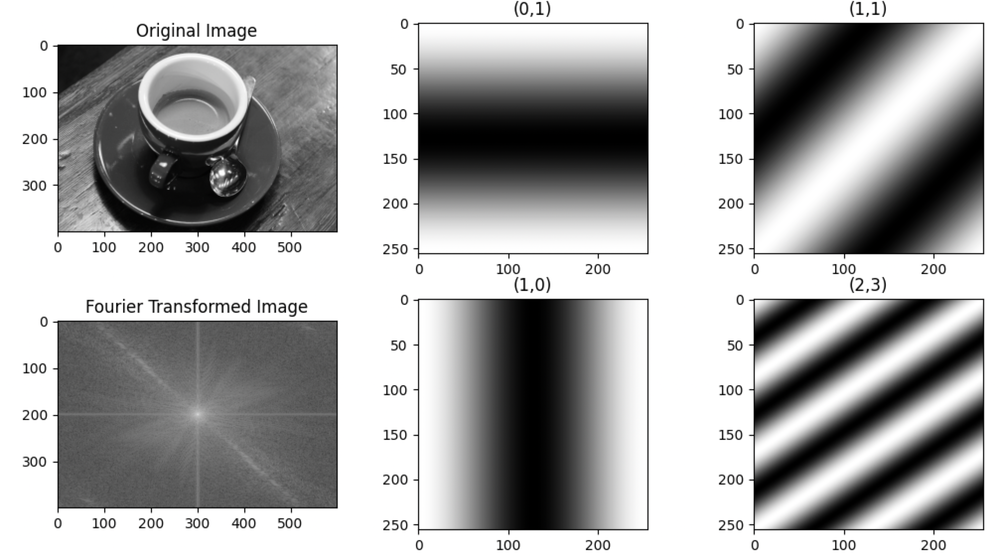
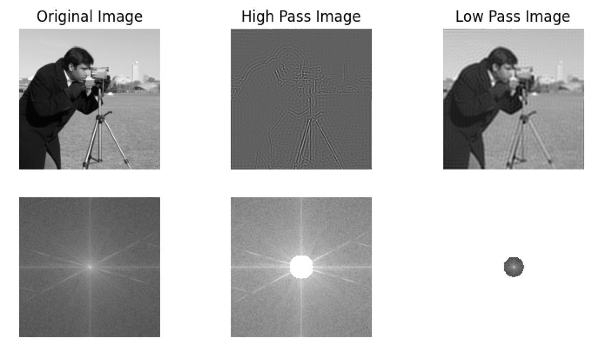
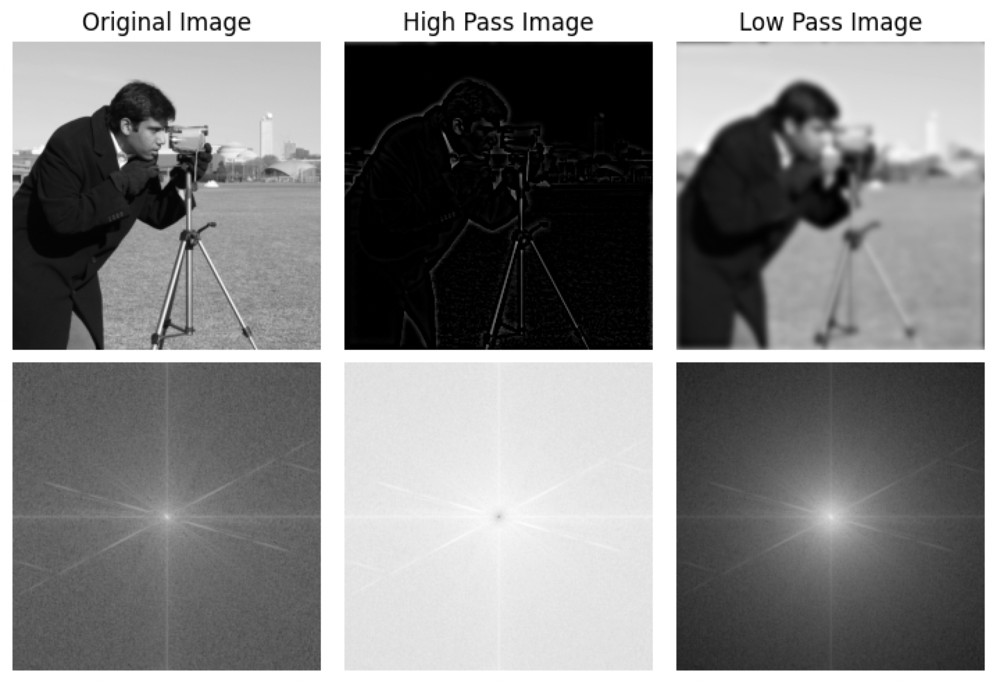
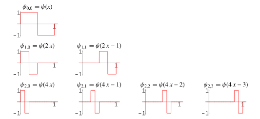

FFT
通过np.fft.fft2可以进行图片的傅里叶变换。👉 代码

Filtering
Ideal Filter
简单的把频域切成高通与低通，会产生"振铃"效应。👉 代码

Butterworth Filter
👉 代码

Wavelet
Haar 小波基函数，(a) 为缩放因子，(b) 为平移因子
$$
\psi_{a,b}(x)=|a|^{-1/2}\psi\left(\frac{x-b}{a}\right)
$$
对于离散小波：i为缩放因子，j为平移因子
$$
a=2^j, b=ia
$$
$$
\phi_j^{i}(x)=2^{j/2}\phi(2^j x-i)
$$

[1]
Reference
[1] https://mathworld.wolfram.com/HaarFunction.html